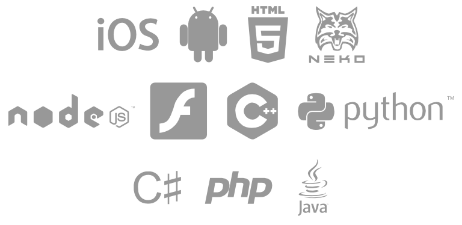

Spoon
is a programming language that runs blazingly fast, compiles to native code and works everywhere.
Show me!
updated
unknown

Support Spoon by contributing on
GitHub
and sharing it with others.
Without people, project like this will be doomed.